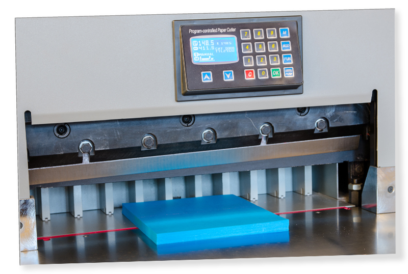

Snijden
Wat is Snijden?
Definitie
Snijden is een essentiële afwerkingstechniek in de drukkerijwereld waarbij papier of ander materiaal op een specifieke maat wordt gesneden. Het proces zorgt ervoor dat de randen van het drukwerk netjes en gelijkmatig zijn, wat cruciaal is voor de professionele uitstraling van het eindproduct.
Voordelen van Snijden
- Precisie: Zorgt voor exact gesneden randen en hoeken, wat belangrijk is voor de consistentie van het drukwerk.
- Esthetiek: Biedt een nette en professionele afwerking aan het drukwerk.
- Veelzijdigheid: Kan worden toegepast op een breed scala aan materialen, van dun papier tot dik karton.
Toepassingen van Snijden
Snijden wordt vaak gebruikt voor:
- Visitekaartjes: Voor het creëren van precieze en gelijkmatige randen.
- Brochures en Folders: Om ervoor te zorgen dat alle pagina's gelijkmatig zijn bijgesneden.
- Boekblokken: Voor het op maat snijden van de pagina’s na het binden.
- Verpakkingen: Voor het snijden van verpakkingsmaterialen in de juiste vormen en maten.
Hoe Werkt Snijden?
Snijden gebeurt meestal met behulp van snijmachines die in staat zijn om met grote precisie te werken. Het materiaal wordt in de machine geplaatst, waarbij het mes exact de gewenste maat snijdt. Bij complexe vormen of patronen kan ook gebruik worden gemaakt van stansmachines, die het materiaal uitstansen in plaats van snijden.
Belangrijke Overwegingen bij Snijden
- Dikte van het Materiaal: Dikker materiaal vereist een krachtigere machine en kan meer slijtage aan de messen veroorzaken.
- Precisie: Kleine afwijkingen in het snijden kunnen grote gevolgen hebben voor de afwerking, vooral bij producten zoals visitekaartjes of brochures.
- Snijkant: Het is belangrijk dat de snijkanten glad en vrij van bramen zijn voor een nette afwerking.